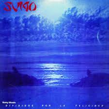

Uso de listas
Preguntas
1.1- ¿Para qué sirve la etiqueta ul? Dar un ejemplo en donde lo utilizarías.
1.2- ¿Para qué sirve la etiqueta ol? Dar un ejemplo en donde lo utilizarías
1.3- ¿Para qué sirve la etiqueta dl? Dar un ejemplo en donde lo utilizarías.
1.4- ¿Para qué sirve la etiqueta li? Dar un ejemplo en donde lo utilizarías.
1.5- Crea una lista desordenada con tres elementos (li) que contengan nombres de países de América del Sur.
1.6- Crea una lista ordenada con cinco elementos (li) que contengan los días de la semana en orden alfabético.
1.7- Anida una lista desordenada dentro de otro elemento (li) de otra lista desordenada para crear una lista
anidada de frutas y verduras.
1.8- Crea una lista ordenada, respetando las negritas y el subrayado, que contenga los siguientes pasos para
hacer una tarta de manzana:
a_ Pelar y cortar las manzanas en rodajas finas.
b_ Mezclar la canela,
el azúcar y
la harina en un tazón.
c_ Colocar la masa de la tarta en un molde para horno.
d_ Colocar las
manzanas sobre la
masa de la tarta.
e_Hornear la tarta durante 45 minutos.
1.9- Existe un atributo que se aplica a la etiqueta (ol) para ver la lista en orden descendente en vez de
ascendente, ¿cuál es ese atributo? Utilizar la referencia de atributos de HTML
https://developer.mozilla.org/es/docs/Web/HTML/Attributes
1.10- Utilizando el atributo anterior, crear una lista con cuatro elementos que contengan nombres de películas
de terror de forma descendente.
1.11 Elegir un gusto particular y realizar una lista descriptiva de por lo menos 5 elementos. El título debe
tener un enlace que lleve a un sitio de referencia. Utilizar en las descripciones etiquetas: strong, em, img.
Respuestas
1.1_Una estiqueta ul sirve para crear una lista no ordenada. Ejemplo:
- Esto
- Lo otro
- Lo de más allá
1.2_Una etiqueta ol sirve para permitr definir listas o viñetas ordenadas, bien con numeración o alfabéticamente.
Ejemplo:
- punto uno
- punto dos
- punto tres
1.3_Una etiqueta dl sirve para representa una lista descriptiva. El elemento encierra una lista de grupos de
términos y de descripciones. Ejemplo:
- Firefox
-
A free, open source, cross-platform, graphical web browser developed by the
Mozilla Corporation and hundreds of volunteers.
1.4_Una etiqueta li sirve para declarar cada uno de los elementos de una lista. Ejemplo:
- punto uno
- punto dos
- punto tres
1.5_
1.6_
- Domingo
- Lunes
- Martes
- Miercoles
- Jueves
- Viernes
- Sabado
1.7_
1.8_
- A_Pelar y cortar las manzanas en rodajas finas.
- B_Mezclar la canela, el azucar y la harina en un tazón
- C_Colocar la masa de la tarta en un molde para horno.
- D_Colocar las manzanas sobre la masa de la tarta.
- E_Hornear la tarta durante 45 minutos
1.9_El atributo que se utiliza para la etiqueta (ol) es deversed.
1.10_
- Masacre de texas
- Viernes 13
- Hallowen
1.11_mejores discos del rock Argentino
- Artud(1973) de Pescado Rabioso

- Clics Modernos(1983) de Charly Garcia

- Manal(1970) de Manal
- Oktubre(1986) de Patricio rey y sus redonditos de ricota
- divididos por la felicidad(1985) de Sumo 